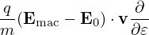
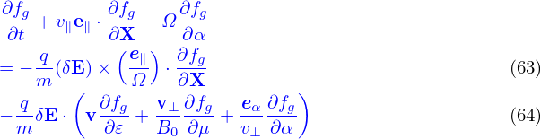
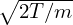
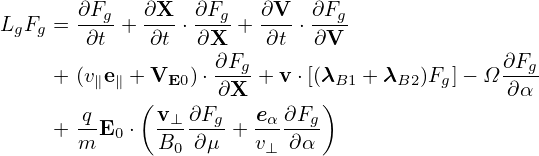
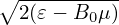
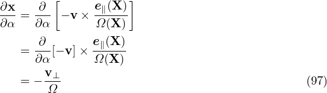

![[ ]
L δF = q-∂Fg0 ∂δΦ| + v⋅∇ δΦ+ -q(E + v× B )⋅ ∂Φ-|
g a m ∂𝜀 ∂t x,v x m 0 0 ∂v x
q ∂Fg0[ ∂δΦ ]
= m--∂𝜀- ∂t-|x,v + v⋅∇x δΦ (104)
[ ( )]
= q-∂Fg0 ∂δΦ|x,v + v⋅ − δE − ∂δA-|x,v
m ∂𝜀 [ ∂t ∂t ]
= q-∂Fg0 ∂δΦ| − v⋅δE − ∂v-⋅δA| . (105)
m ∂𝜀 ∂t x,v ∂t x,v
q ∂Fg0[ ∂δΦ ∂v ⋅δA ]
= m--∂𝜀- ∂t--− v⋅δE − --∂t--- . (106)](nonlinear_gyrokinetic_equation110x.png)
Since the definition of the guiding-center variables (X,𝜀,μ,α) involves the equilibrium fields B0 and E0, to further simplify Eq. (52), we need to separate electromagnetic field into equilibrium and perturbation parts. Writing the electromagnetic field as
| (53) |
and
| (54) |
then substituting these expressions into equation (52) and moving all terms involving the field perturbations to the right-hand side, we obtain
where δR is defined by
Next, let us simplify the left-hand side of Eq. (55). Note that
Note that
| (58) |
where vE0 is defined by vE0 = cE0 × e∥∕B0, which is the E0 × B0 drift. Further note that
which can be combined with v ⋅ ∂fg∕∂X term, yielding v∥e∥⋅ ∂fg∕∂X.
Using Eqs. (58), (59), and (57), the left-hand side of equation (55) is written as
where Lg is often called the unperturbed Vlasov propagator in guiding-center coordinates (X,𝜀,μ,α).
[Equation (60), corresponds to Eq. (7) in Frieman-Chen’s paper[3]. In Frieman-Chen’s equation (7), there is a term

where Emac is a given macroscopic electric field introduced when defining the guiding-center transformation. In my derivation Emac is chosen to be equal to the equilibrium electric field, and thus the above term is zero.]
Using the above results, Eq. (55) is written as
| (61) |
i.e.
It is instructive to consider some special cases of the above complicated equation. Consider the case that the equilibrium magnetic field B0 is uniform and time-independent, E0 = 0, and the electrostatic limit δB = 0, then equation (62) is simplified as

If neglecting the δE perturbation, the above equation reduces to
| (65) |
which agrees with Eq. (21) discussed in Sec. 1.2.
Expand the distribution function fg as
| (66) |
where Fg is assumed to be an equilibrium distribution function, i.e.,
| (67) |
Using Eqs. (66) and (67) in Eq. (61), we obtain an equation for δFg:
| (68) |
To facilitate the simplification of the Vlasov equation in the low-frequency regime, we assume the following orderings (some of which are roughly based on experiment measure of fluctuations responsible for tokamak plasma transport, some of which can be invalid in some interesting cases.) These ordering are often called the standard gyrokinetic orderings.
Define the spatial scale length L0 of equilibrium quantities by L0 ≈ Fg∕|∇XFg|. Assume that L0 is much larger than the thermal gyro-radius ρi ≡ vt∕Ω, i.e., λ ≡ ρi∕L0 is a small parameter, where vt =

is the thermal velocity. That is| (69) |
and
| (70) |
The equilibrium E0 × B0 flow, which is given by
| (71) |
is assumed to be weak with
| (72) |
In terms of the scalar and vector potentials, δΦ and δA, the electromagnetic perturbation is written as
| (73) |
and
| (74) |
Most gyrokinetic simulations approximate the vector potential as δA ≈ δA∥e∥. Then Eq. (73) is writen as
| (75) |
We assume that the amplitudes of perturbations are small:
| (76) |
Further we assume that the parallel wavelength of perturbations is much longer than ρi:
| (77) |
and pependicular wavelength is of the same oder of ρi:
| (78) |
Equation (75) indicates that δB ∼ δA∥∕ρi. Then the odering in (76) indicates that vtδA∥ is of the same order of δΦ.
The electrical field perturbation is written as
| (79) |
| (80) |
Using the above orderings, it is ready to see that δE∥ is one order smaller than δE⊥, i.e.,
| (81) |
We assume the perturbations are of low frequency: ω∕Ω ∼ O(λ1), i.e.,
| (82) |
The evolution of the macroscopic quantity Fg is governed by Eq. (67), i.e.,
| (83) |
where the left-hand side is written as

Expand Fg as Fg = Fg0 + Fg1 + …., where Fgi ∼ Fg0O(λi). Then, the balance on order O(λ0) gives
| (84) |
i.e., Fg0 is independent of the gyro-angle α. The balance on O(λ1) gives
| (85) |
Performing averaging over α, ∫ 02π(…)dα, on the above equation and noting that Fg0 is independent of α, we obtain
| (86) |
Note that a quantity A = A(x) that is independent of v will depend on v when transformed to guiding-center coordinates, i.e., A(x) = Ag(X,v). Therefore Ag depends on gyro-angle α. However, since ρi∕L ≪ 1 for equilibrium quantities, the gyro-angle dependence of the equilibrium quantities can be neglected. Specifically, e∥, B0 and Ω can be considered to be independent of α. As to v∥, we have v∥ = ±

. Since B0 is considered independent of α, so does v∥. Using these results, equation (86) is written| (87) |
Using E0 = −∇Φ0, the above equation is written as
| (88) |
Note that
| (89) |
where the error is of O(λ2)Φ0, and thus, accurate to O(λ), the last term of equation (88) is zero. Then equation (88) is written as
| (90) |
which implies that Fg0 is constant along a magnetic field line.
Using Fg ≈ Fg0, equation (68) is written as
| (91) |
where δRδFg is a nonlinear term which is of order O(λ2) or higher, LgδFg and δRFg0 are linear terms which are of order O(λ1) or higher. The linear term δRFg0 is given by
| (92) |
In obtaining (92), use has been made of ∂Fg0∕∂α = 0. Another linear term LgδFg is written as
where Ω∂δFg∕∂α is of order O(λ1) and all the other terms are of order O(λ2).
Next, to reduce the complexity of algebra, we consider the easier case in which ∂Fg0∕∂μ = 0.
The balance between the leading terms (terms of O(λ)) in Eq. (91) requires that
| (94) |
where δFa is a unknown distribution function to be solved from the above equation. It is ready to verify that
| (95) |
is a solution to the above equation, accurate to O(λ). [Proof: Substitute expression (95) into the left-hand side of Eq. (94), we obtain
Using

Eq. (96) is written as
where terms of O(λ2) have been dropped. Similarly, dropping the parallel electric field term (which is of O(λ2)) on the right-hand side of Eq. (94), we find it is identical to the right-hand side of Eq. (99)]
As is discussed above, the terms of O(λ) can be eliminated by splitting a so-called adiabatic term form δFg. Specifically, write δFg as
| (100) |
where δFa is given by (95), i.e.,
| (101) |
which depends on the gyro-angle via δΦ and this term is often called adiabatic term. Plugging expression (100) into equation (91), we obtain
| (102) |
Next, let us simplify the linear term on the right-hand side, i.e, δRFg0 −LgfδFa, (which should be of O(λ2) or higher because Ω∂δFa∕∂α cancels all the O(λ1) terms in δRFg0).
LgδFa is written
where the error is of order O(λ3). In obtaining the above expression, use has been made of e∥⋅∂Fg0∕∂X = 0, ∂Fg0∕∂X = O(λ1)Fg0, ∂Fg0∕∂α = 0, ∂Fg0∕∂μ = 0, and the definition of λB1 and λB2 given in expressions (39) and (40). The expression (103) involves δΦ operated by the Vlasov propagator Lg. Since δΦ takes the most simple form when expressed in particle coordinates (if in guiding-center coordinates, δΦ(x) = δΦ(X−v ×e∥∕Ω), which depends on velocity coordinates and thus more complicated), it is convenient to use the Vlasov propagator Lg expressed in particle coordinates. Transforming Lg back to the particle coordinates, expression (103) is written
Using this and expression (92), δRFg0 − LgδFa is written as
where the two terms of O(λ1) (the terms in blue and red) cancel each other, with the remain terms being all of O(λ2), i.e, the contribution of the adiabatic term cancels the leading order terms of O(λ1) on the RHS of Eq. (102).
The consequence of this is that, as we will see in Sec. 3.6.0, δG is independent of the gyro-angle, accurate to order O(λ1). Therefore, separating δF into adiabatic and non-adiabatic parts also corresponds to separating δF into gyro-angle dependent and gyro-angle independent parts.
Let us rewrite the linear term (107) in terms of δΦ and δA. The δE + v ×δB term in expression (107) is written as
| (108) |
Note that this term needs to be accurate to only O(λ). Then
| (109) |
where the error is of O(λ2). Using the vector identity v ×∇x ×δA = (∇δA) ⋅v − (v ⋅∇)δA and noting v is constant for ∇x operator, the above equation is written
| (110) |
Note that Eq. (41) indicates that ∇xδΦ ≈∇XδΦ, where the error is of O(λ2), then the above equation is written
| (111) |
Further note that the parallel gradients in the above equation are of O(λ2) and thus can be dropped. Then expression (111) is written
where δL is defined by
| (113) |
Using expression (112), equation (107) is written
| (114) |
where all terms are of O(λ2).
Plugging expression (114) into Eq. (102), we obtain
| (115) |
where Lg is given by Eq. (93), i.e.,
Expand δG as
where δGi ∼ O(λi+1)Fg0, and note that the right-hand side of Eq. (115) is of O(λ2), then, the balance on order O(λ1) requires
| (117) |
i.e., δG0 is gyro-phase independent.
The balance on order O(λ2) requires (for the special case of E0 = 0):
Define the gyro-average operator ⟨…⟩α by
| (119) |
where h = h(X,α,𝜀,μ) is an arbitrary function of guiding-center variables. The gyro-averaging is an integration in the velocity space. [For a field quantity, which is independent of the velocity in particle coordinates, i.e., h = h(x), it is ready to see that the above averaging is a spatial averaging over a gyro-ring.]
Gyro-averaging Eq. (118), we obtain
where use has been made of ⟨(v⊥⋅∇X)δA⟩α ≈ 0, where the error is of order higher than O(λ2). Note that v∥ = ±. Since B0 is approximately independent of α, so does v∥. Using this, the first gyro-averaging on the left-hand side of the above equation is written
| (121) |
The second gyro-averaging on the left-hand side of Eq. (120) can be written as
| (122) |
where VD is the magnetic curvature and gradient drift (Eq. (122) is derived in Appendix xx, to do later). Then Eq. (120) is written
Next, we try to simplify the nonlinear term ⟨δRδFg⟩α appearing in Eq. (123), which is written as
First, let us focus on the first term, which can be written as

Using the above results, the nonlinear term ⟨δRδF⟩α is written as
| (126) |
Accurate to O(λ2),the first term on the right-hand side of the above is zero. [Proof:
where use has been made of ⟨v⊥⋅∇XδΦ⟩α ≈ 0, where the error is of O(λ2). Using the above results, expression (126) is written as
| (128) |
Using the expression of δR given by Eq. (56), the above expression is written as
where use has been made of ∂δG0∕∂α = 0. Using Eq. (112), we obtain
| (130) |
The other two terms in Eq. (129) can be proved to be zero. [Proof:
] Using the above results, the nonlinear term is finally written as
| (133) |
Using this in Eq. (128), we obtain
| (134) |
which is of O(λ2).
Using the above results, the gyro-averaged kinetic equation for δG0 is finally written as
where δG0 = δG0(X,𝜀,μ,t) is gyro-angle independent and is related to the distribution function perturbation δFg by
| (136) |
where the first term is called “adiabatic part”, which depends on the gyro-phase α via δΦ. (Equation (135) is the special case (∂Fg0∕∂μ|𝜀 = 0) of the Frieman-Chen nonlinear gyrokinetic equation given in Ref. [3]. Note that the nonlinear terms only appear on the left-hand side of Eq. (135) and all the terms on the right-hand side are linear.) Here VD is the guiding-center drift velocity in the equilibrim field; ⟨…⟩ is the gyro-phase averaging operator; δL = δΦ − v ⋅ δA; the term
| (137) |
consists of the δE × B0 drift and magnetic fluttering term (refer to expression (341) in Sec. C.3). For notaiton ease, this term is denoted by δVD in the following:
| (138) |
Note that ∇≡ ∂∕∂X, which is the gradient operator in the guiding-center coordinates (X,𝜀,μ,α) while holding (𝜀,μ,α) constant. How do we numerically calculate ∂Φg∕∂X in PIC simulations? The difficulty is that X grid is not available, which makes it difficult to use the finite difference method. Meanwhile x grid is available in PIC simulations. It turns out we can make use of x grid to approximatly calculate the derivatives in X space. Using x = X + ρ and the definition δΦg(X,α,v⊥) = δΦp(x) we obtain
which is accurate up to O(λ) in gyrokinetic ordering. The above relation indicates that the value of ∂δΦg∕∂X at a guidng-center location is approximately equal to the value of ∂δΦp∕∂x at the corresponding particle position. Therefore we can use δΦ defined on x grid to compute ∂δΦp∕∂x on gridpoints, and interpolate it to the particle position and this is a good approximation of ∂δΦg∕∂X.
Also note that ⟨δΦg⟩ is not known on X grid (it is known at random markers). So, to calculate ∂⟨δΦg⟩∕∂X, we need to exchange the operation order:
| (140) |
For notation ease, the subscripts g and p are usually dropped. Which one is intended should be obvious from the context.
![( )
q- (e∥) ∂Fg0 q- ∂Fg0
δRFg0 − LgδFa = − m(δE + v ×δB )× Ω ⋅ ∂X − m δE ⋅ v ∂ 𝜀
q ∂Fg0 [∂δΦ ∂v ⋅δA ]
− m--∂𝜀- -∂t-− v⋅δE − ---∂t--
( ) [ ]
= − q(δE + v ×δB )× e∥ ⋅ ∂Fg0 − q-∂Fg0 ∂Φ-− ∂v-⋅δA- , (107)
m Ω ∂X m ∂𝜀 ∂t ∂t](nonlinear_gyrokinetic_equation111x.png)